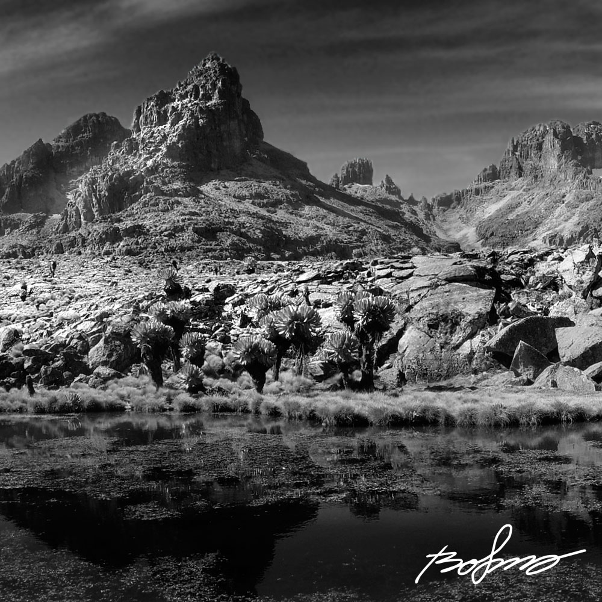

Mount Kenya is the highest mountain in Kenya and the second-highest in Africa, after Kilimanjaro.[4] The highest peaks of the mountain are Batian (5,199 metres (17,057 ft)), Nelion (5,188 metres (17,021 ft)) and Point Lenana (4,985 metres (16,355 ft)). Mount Kenya is located in central Kenya, the heart of Kenya, about 16.5 kilometres (10.3 mi) south of the equator, around 150 kilometres (93 mi) north-northeast of the capital Nairobi.[4] Mount Kenya is the source of the name of the Republic of Kenya. Mount Kenya is a stratovolcano created approximately 3 million years after the opening of the East African rift.[5] Before glaciation, it was 7,000 m (23,000 ft) high. It was covered by an ice cap for thousands of years. This has resulted in very eroded slopes[6] and numerous valleys radiating from the centre.[7] There are currently 11 small glaciers.  There are several vegetation bands from the base to the summit.[9] The lower slopes are covered by different types of forest. Many alpine species are endemic to Mount Kenya, such as the giant lobelias and senecios and a local subspecies of rock hyrax.[10] An area of 715 km2 (276 sq mi) around the centre of the mountain was designated a National Park[11] and listed as a UNESCO World Heritage Site in 1997.[12] The park receives over 16,000 visitors per year.[8].